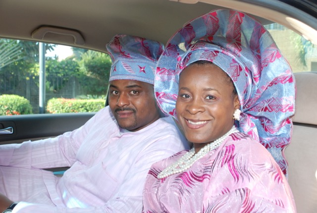
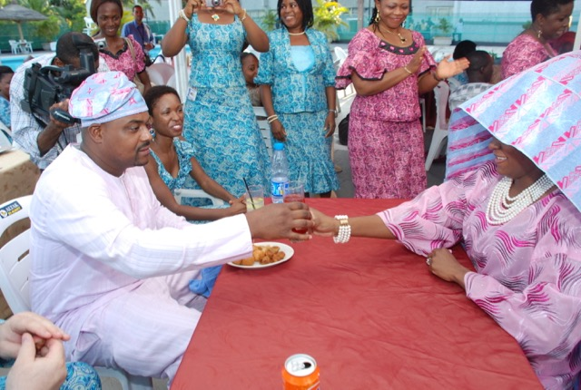
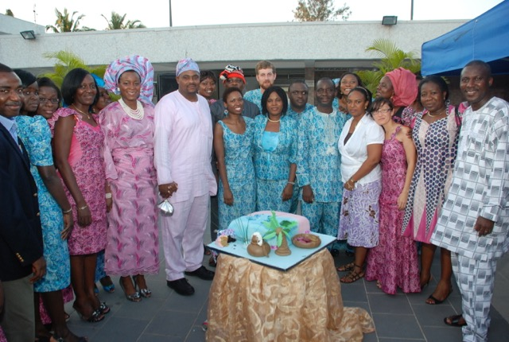
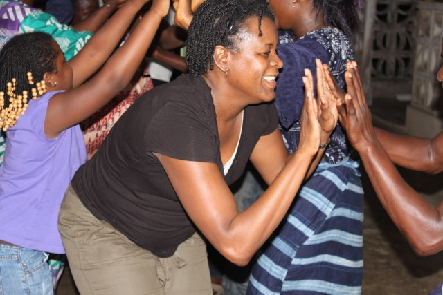

I moved to Lagos, Nigeria for the second time in August 2009. My husband
joined me almost a year later in July 2010. While we had amazing experiences
traveling outside of Nigeria, I want to focus on my favorite places and
experiences within Nigeria.
A few interesting facts about Nigeria. It's actually named The Federal
Republic of Nigeria. It has 36 states and a population of about 184 million.
It is the world's 20th largest economy and the paper currency of
Nigeria is the Naira (₦). H/T: Wikipedia
The Nigerian Wedding (Lagos, Nigeria)
After my husband Martesee and I returned from the US for our wedding, my
coworkers decided to throw us a traditional wedding. They went FULL out!
They had our wedding outfits made and had someone one had to tie my gele,
the large and elaborate head wrap.
Everyone came dressed in aso ebi, which is when the wedding attendees
come dressed in the same material to show solidarity. They had drummers,
a DJ, food, drinks and a cake.
It was the single most nicest thing a group of people has ever done for
me and something neither my husband nor I will ever forget.



Nike Centre for Arts & Culture (Osogbo, Nigeria)
Chief Oyenike Okundaye is a professional textile artist and painter dedicated
to preserving traditional and modern art in Nigeria. She offers tours of her
hometown where you can see the process of Yoruba textile production.
On this visit, an elder recounted my history to me and in the evening we
were able to watch and participate in a tradition music and dance performance.

Osun-Osogbo Sacred Grove (Osogbo, Nigera)
This is absolutely my favorite place in Nigeria. It is located by the
Osun River and is said to be the abode of the goddess of fertility Oshun,
a Yoruba goddess. It is beautiful, quiet and has this spiritual
peacefulness that made me want to stay longer. I would definitely return.